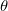
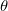
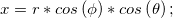

内容 |
球座標の配列をデカルト座標に変換
必要なOriginのバージョン: Origin 9.1 SR0以降
1. sph2cart format:=virmat iw:=[Book1]Sheet1! omx:=<new>!<new> omy:=<same>!<new> omz:=<same>!<new>;//Book1 Sheet1 内にある仮想行列データを3つの行列オブジェクト X Y Z の同名の行列に変換する
2. sph2cart ir:=[Book1]Sheet1!(A,B,C)[1:3] unit:=1 oz:=<new>!(<new>,<new>,<new>);// XYZ ワークシートデータ列を変換し、結果のXYZデータを新しいワークシートにXYZ列として出力する
3. sph2cart format:=mats ima:=[MBook1]MSheet1!1 ime:=[MBook2]MSheet1!1 imr:=[MBook3]MSheet1!1;//異なる行列ブックにある3つの行列オブジェクトを変換し、変換した3つのX、Y、Zデータを格納した行列ブックを出力
| 表示名 | 変数名 | I/Oとタイプ | デフォルト値 | 説明 |
|---|---|---|---|---|
| データフォーマット | format |
入力 int |
0 |
入力データ形式を指定します。入力は球体の座標システムであると推測されます。
オプションリスト
|
| 入力 | ir |
入力 XYZRange |
<active> |
この変数は変数のフォーマットがxyzに設定されている時のみ使用可能です。これは入力するXYZデータ範囲を指定するのに使用します。 |
| 方位 | ima |
入力 MatrixObject |
<active> |
この変数は変数のフォーマットがmatsに設定されている時のみ使用可能です。方位データとして入力する行列データを指定します。 |
| 標高 | ime |
入力 MatrixObject |
<active> |
この変数は変数のフォーマットがmatsに設定されている時のみ使用可能です。標高データとして入力する行列データを指定します。 |
| 半径 | imr |
入力 MatrixObject |
<active> |
この変数は変数のフォーマットがmatまたはmatsに設定されている時に使用可能です。フォーマットがmat変数の場合は入力する行列オブジェクトを指定します。フォーマットがmats変数の場合は、半径データとして入力する行列オブジェクトを指定します。 |
| 入力 | iw |
入力 Worksheet |
<active> |
この変数は変数のフォーマットがvirmatに設定されている時のみ使用可能です。これは仮想行列のワークシート範囲を指定するために使用します。 |
| 角度データ | angle |
入力 int |
0 |
この変数は変数のフォーマットがvirmatまたはmatに設定されている時のみ使用可能です。これは方位や標高のデータ値が元のデータないでどのように配置されているか指定します。
オプションリスト
|
| 方位角値 | alabel |
入力 int |
0 |
この変数はangle変数が0(列を横断して方位)設定されている時のみ使用可能です。方位角値のデータソースを指定します。
オプションリスト
|
| 標高の値 | elabel |
入力 int |
0 |
この変数はangle変数が1(列を横断して標高)設定されている時のみ使用可能です。標高の値のデータソースを指定します。 オプションリスト
|
| 列ラベル | param |
入力 int |
0 |
この変数はalabel またはelabel 変数でsecondか1(列ラベル)をセットした時のみ有効になります。方位または標高データとして使用する列ラベル行を指定します。
オプションリスト
|
| 角度単位 | unit |
入力 int |
0 |
入力データに対して方位角の単位を指定します。
オプションリスト
|
| X | omx |
出力 MatrixObject |
<新規> |
この変数は変数のフォーマットが XYZに設定されていない時のみ使用可能です。変換したXの値をどこに出力するか指定します。変換したX値は出力した行列オブジェクトのZ値になります。 |
| Y | omy |
出力 MatrixObject |
<新規> |
この変数は変数のフォーマットが XYZに設定されていない時のみ使用可能です。変換したYの値をどこに出力するか指定します。変換したY値は出力した行列オブジェクトのZ値になります。 |
| Z | omz |
出力 MatrixObject |
<新規> |
この変数は変数のフォーマットが XYZに設定されていない時のみ使用可能です。変換したZの値をどこに出力するか指定します。変換したZ値は出力した行列オブジェクトのZ値になります。 |
| 出力 | oz |
出力 XYZRange |
<新規> |
この変数は変数のフォーマットがXYZに設定されている時のみ使用可能です。変換したXYZデータを出力するワークシート範囲を指定します。 |
このツールは球面座標系をデカルト座標系に変換する際に使用するツールです。入力データはワークシートのXYZ列、仮想行列、1つの行列オブジェクト、同じ次元をもつ3つの行列オブジェクトのいずれかを利用できます。
以下のコマンドをスクリプトウィンドウまたはコマンドウィンドウで実行するとこのツールのGUIダイアログを開く事ができます。
sph2cart -d;
球面座標はによって定義されます。ここで、は半径(データポイントと原点との距離)、 が標高(XY面からデータポイントまでの偏位角度、単位はラジアン)、が方位(X軸からデータポイントまでの偏位角度を正の数で表示、つまりX > 0で、単位はラジアン)を示します。下図はそれぞれの3つの値はどのように定義されるか示します。
が標高(XY面からデータポイントまでの偏位角度、単位はラジアン)、が方位(X軸からデータポイントまでの偏位角度を正の数で表示、つまりX > 0で、単位はラジアン)を示します。下図はそれぞれの3つの値はどのように定義されるか示します。
方位、標高、半径のデータは入力データ形式で変更になります。
| 入力データフォーマット | 方位 | 標高 | 半径 |
|---|---|---|---|
| XYZ | X列 | Y列 | Z列 |
| 仮想行列/行列オブジェクト | 仮想行列/行列オブジェクトのX値 | 仮想行列/行列オブジェクトのY値 | 仮想行列/行列オブジェクトのZ値 |
| 1つのレイヤに3つの行列 | 行列オブジェクト内のZ値が方位角値として設定 | 行列オブジェクト内のZ値が標高の値として設定 | 行列オブジェクト内のZ値が半径の値として設定 |
入力データは球面座標からデカルト座標に下記の手法で変換されます。
